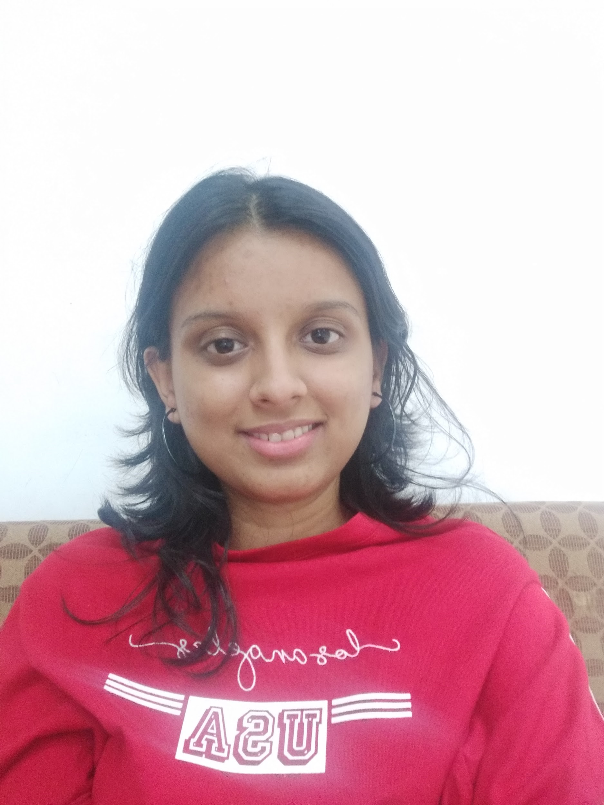
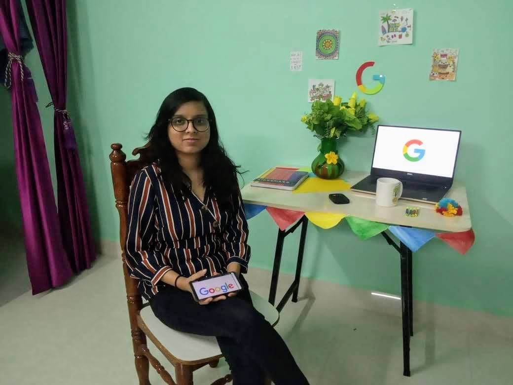

Hi, I am Shailee Suryawanshi, a thirdie from the Electrical Engineering Department. I am a dual degree student(Specialization: Microelectronics). I have a lot of interests ranging from drawing, cooking, crafting, etc. though having mastery in none of them :P. I interned with Google in my third-year. Through this article, I have tried to give a glimpse of my internship as well as a few preparation tips and have also tried to present the situation from the perspective of an IC. I am writing for the first time so please bear with me :D.

Pre- Internship
TL;DR: Don't undermine your abilities and don't think CPI quantifies your knowledge to the complete extent. Always be ready to take risks and don't let other people loosen your faith in yourself. Be clear of your path and don't blindly apply in every firm which comes.
Starting from my sophomore year, I had no idea about the field I wanted to pursue. Owing to my less CPI, the fear of not having the capabilities of pursuing the core was always in my mind. Consequently, I thought of trying my hands on non-core. I did a design internship in a startup "goDutch" in winters and a product design internship in a very small firm "World of Steel" in my summers. The experiences were not at par with my expectations but a feeling of worthlessness was deeply rooted inside my soul. So, when the internship season began I was applying to every single firm apart from coding. I was feeling dejected about not being eligible to apply to the consulting firms(they don't want to wait for 2 years to give the PPOs) but later I realized that this was for my own good.
I applied in FMCGs, got shortlisted for GDs(Group Discussions), and didn't make further. The situation wasn't any better in the case of Analytics. Being an IC was very difficult at those times because I felt that the opportunities were slipping away and others were getting selected. By this time I was completely demotivated even though only a few firms had gone as it is always being said that good firms only come on Day-1,2. But let me tell you good companies do come even after Day-1 and not everyone would be selected on day-1.
I was the POC(Person of Contact) for one of the CS firms on Day-1(IT) and was talking to HR after the interviews. He mentioned about Google and how the company is planning to increase its staffing this year. His words turned out to be golden and I signed Google IAF. Some of the fellows said to me that why am I applying when there are people with very strong profiles and that there isn't any chance of my selections at those times . Now the next step was preparing for the interviews.
The Interview
Google mailed us a list of topics that we should be prepared with before the interviews. The topics included the basics of digital, analog, and coding. I was scared of seeing the coding in the list as I was not having a very good coding background but I decided to brush up the basics of DSA. Then comes the day of the interview. There were two rounds of 45 mins each. First-round had analog and coding. It went very well. The interviewer said that this was the best interview which he has taken so far(:D). The second round had digital electronics and went ok. After the interviews, I was eagerly waiting for the results. After 4-5 days a blog post with the selections came but my name wasn't there. After some time I got the call from the IC handing Google that I have been shortlisted for one more round(Hope revived). I gave the round 3 and was selected.

Internship Experience
Covid-19 took away the onsite internship experience and hence this was not exactly what I expected. The institute decided to open in June and hence this created a lot of challenges as Google was not ready to start the internship before May. Meanwhile, the company assured us that things would be taken care of and we won't lose our intern. I am really thankful to the entire People's Operations Team to shift the entire program to an online mode amidst the difficulties.
The internship started on 4 May. I was allotted a host and a co-host(buddy), I was so excited to receive the WFH kit as well as the laptop. Being in the remote area, my laptop came very late(after 4 weeks of the internship) and it was kind of depressing as work can't start without access. During these times my host and co-host came to the rescue and gave me the work which can be done without corporate access. I can't give full information about my project due to confidentiality issues. In short, my project was to develop a Python script to automate some of the tasks done by RTL designers.
Apart from the work, there were a lot of events to inculcate the Gogglyness in us. I attended almost all of them and this served as a good opportunity to know fellow Googlers. I also made several friends from the internship. The team also sent us SWAGs(goodies).
In the end, the internship has taught me quite a lot. From being scared of coding to being desperately waiting for the coding assignments, the journey has been amazing. I transformed from being a person wandering in search of motivation and help to a person who is confident in his own worth.